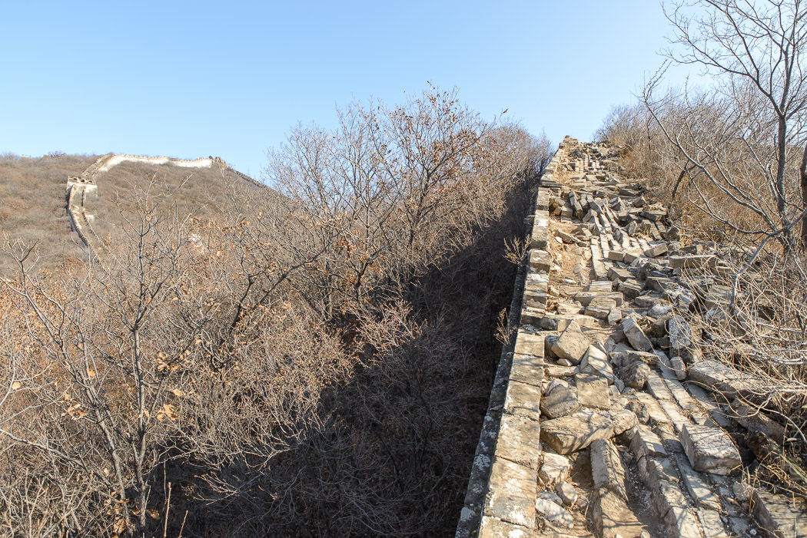

Wenn man schon mal in Peking ist, sollte man sich die Mauer natürlich nicht entgehen lassen. Um nicht in Touristenmassen unterzugehen, haben wir uns für ein etwas entfernter liegendes Stück entschieden, wo man richtig wandern kann. Zuerst mussten wir aber eine ganze Weile in Zeitlupe über die Stadtautobahn kriechen, wo in aller Regel langsamer gefahren wird als auf normalen Straßen, weil eben immer Stau ist. Die Stadt ist wirklich riesig und wird in den Außenbezirken nicht schöner. Hier findet man auch ältere, schäbigere Hochhäuser, die wir eigentlich in der ganzen Stadt vermutet hätten. Trotz dezentem Sowjet-Charme ist alles geleckt sauber. Als es bergiger wurde, kamen wir durch kleine Ausflugsdörfer mit vielen großräumigen Gaststätten, die allesamt ausgestorben waren. Die Landschaft ist wie in der Eifel.
Endlich sahen wir das erste Stück Mauer wie eine dicke Schlange auf einem Bergrücken ruhen. Der Fahrer bog auf immer kleinere Straßen ab, bis er uns schließlich mit unserem in die Jahre gekommen Führer an einer unscheinbaren Stelle abgesetzt hat. Hier beginnt der Zustieg zur Mauer über einen Trampelpfad, der durch den Wald steil hinauf führt. Nach einer halben Stunde hatten wir einen Wehrturm erreicht.

Dieses Stück der Mauer ist nicht renoviert. Das Pflaster ist aufgerissen und von Gebüschen überwuchert. Teils bleibt nur ein kleiner Pfad auf der Mauer begehbar. Alle paar hundert Meter steht ein Wachturm. Die höchste Stelle der Mauer in dieser Gegend liegt auf 999m. Das Stück von dort weg ist sehr steil und wir mussten uns an die Balustrade klammern, um nicht herunter zu rutschen.
Etwas später gelangten wir zum restaurierten Teil, der von der anderen Seite vom Ort Mutianyu aus zugänglich ist. Hier führen Treppen über die steilsten Passagen und es wurde deutlich voller. Faule können sich hier mit der Seilbahnen vom Tal zur Mauer bringen zu lassen. Für den Rückweg gibt es absurderweise sogar eine Rodelbahn.
Auf dem Rückweg haben wir uns im Kunstbezirk 798 absetzen lassen. Obwohl er auf dem halben Weg zum Flughafen gelegen ist, sieht es dort so städtisch aus wie im Zentrum - nur ohne alte Häuser. Es handelt sich um ein ehemaliges Industrie- und Fabrikgelände, das vor einigen Jahren von Galerien und Künstlern entdeckt und wiederbelebt wurde. Auf den Straßen gibt es viele Graffitis und "Kunst im öffentlichen Raum" zu sehen. Später sind haufenweise schicke Cafés, Design-Stores und Boutiquen nachgezogen und machen die Ecke zu einem interessanten Ausflug.
Leider war es nach 18 Uhr schnell ausgestorben, so dass wir wieder die abendliche Metro-Wallfahrt nach Hause angetreten sind. Wir mussten früh ins Bett, weil wir mitten in der Nacht schon wieder zum Flughafen mussten, um nach Japan weiter zu reisen.